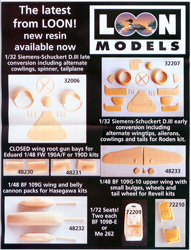
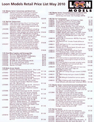
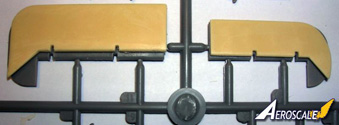
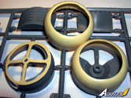
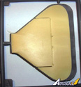
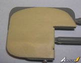
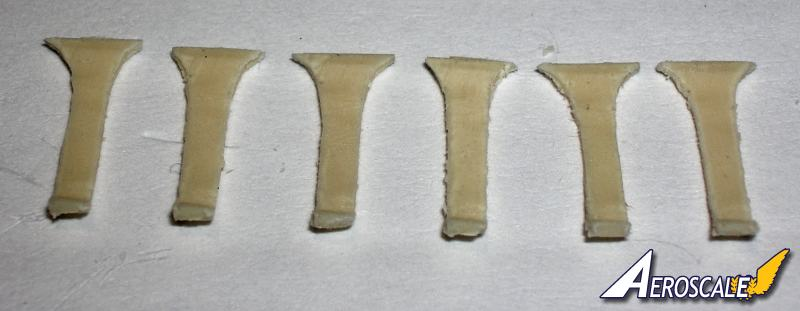
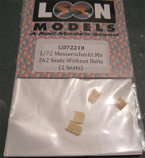

{kind=link}
{kind=link}
{kind=link}
{kind=link}
{kind=link}
{kind=link}
{kind=link}
{kind=link}
{kind=link}
{kind=link}
{kind=link}
{kind=link}
{kind=link}
{kind=link}
{kind=link}
{kind=link}
{kind=link}
{kind=link}
{kind=link}
{kind=link}
{kind=link}
{kind=link}
{kind=link}
{kind=link}
{kind=link}
{kind=link}
{kind=link}


Loon Models 2010 Assorted Resin Releases


Available from Roll Models and Great Models Web Store
Images and text Copyright © 2010 by Stephen Lawson, Terri Werner and Michael Fitzgerald. Forward by Matt Swan
Loon Models, a subsidiary of Roll Models, has announced their new releases for 2010 in resin detail accessories. In general all these sets display excellent casting and very good fit. Flash across the board seems minimal and for the most part are free of bubbles. Rather than simply look in some packages I thought it would be good to send some sets out to our volunteer staff of reviewers and get some more in-depth information.
1/32 Siemens-Schuckert D.III Early Conversion set #LO32006 by:
Stephen Lawson
Aircraft History
The S.S.W D.III was a development of their earlier D.IIc prototype. The D.III was an equal-span sesquiplane powered by a 160 hp (119 kW) Siemens Halske Sh.III conter rotary engine. Idflieg placed an order for 20 aircraft in December 1917, followed by a second order of 30 aircraft in February 1918.
Approximately 41 D.IIIs were delivered to frontline units between April and May 1918. Most aircraft were supplied to Jagdgeschwader II, (Jastas 12, 13 15 &19.) whose pilots were enthusiastic about the new aircraft's handling and rate of climb. (This version is covered by the Loon Models set LO32006.) After only seven to 10 hours of service, however, the Sh.III engines started showing serious problems with overheating and piston seizure. The problem was later traced to the Voltol mineral oil that was used to replace the now-scarce castor oil. Furthermore, the close-fitting engine cowling provided inadequate cooling to the engine.
In late May 1918, Jagdgeschwader II replaced its D.III aircraft with the Fokker D.VII. The remaining D.III aircraft were returned to the Siemens-Schuckert factory, where they were retrofitted with new Sh.IIIa engines, an enlarged rudder, and cutaway cowlings that provided improved airflow and ballanced ailerons. A further 30 new production D.III airframes incorporated these modifications. Total production amounted to 80 aircraft.
Kit History
Loon Models is a subsidiary to Roll Models.com. Loon Models has manufactured resin 1:32 ''Master Series'' Correction / Conversion / Detail (LO32006) and its sister set LO32007 are resin parts applicable to Roden's 1:32 Siemens Schuckert D.III. Set LO32006 backdates the kit to the earliest production issues first release for front line operations and testing to JG II in 1918. All parts clean up with minimal effort.
Box Contents
Siemens Schuckert D.III early conversion includes 20 pieces of good quality resin. They are;
2 @ Early full-cowlings (1 being an extra)
6 @ Engine braces (2 being extras)
1 @ Engine forward support ring
1 @ Unvented spinner
4 @ Early wingtips.
4 @ Ailerons
1 @ Early horizontal tail unit
1 @ Early version rudder
The instructions are two sided half page of text. There are not any decals with this kit.
References:
Eisernes Kreuz und Balkan Kreuz by H.Nowarra, Hoffman Pub. p.120, 1968.
German Army Air Service in WWI, Osprey, Vintage Warbirds #2, Photos 102-105, 1985.
German Fighter Units - June 1917-1918 by A.Imrie, Osprey Pub. 1978.
Lafayette Foundation Archive, Denver CO. USA.
Over the Front Vol. 2, #4, p.376, 1986.
Over the Front Vol.14, #3, p.280 1999.
Over the Front Vol.14, #4, p.368-370, 1999.
Over the Front Vol.15, #4, p.370, 2000.
Pictorial History of the German Army Air Service by A.Imrie, Ian Allan Pub. p.173, 1971.
Siemens Schuckert D.I/ III/ IV by Harry Woodman, Scale Models, Pp.348-352, July 1981.
Siemens Schuckert D.III & IV by P.L.Gray, Profile Pub. #86, 1966.
Spandau Machine Gun by David Watts, 1998 WWI Aero.
SSW D.III by Dick Bennett, WWI Aero #123, Feb. 1989.Pp.8-25.
SSW D.III Cockpits & Instruments by Roy Meyers, WWI Aero #123, Feb. 1989, Pp.72-75.
SSW D.III - D.IV by P.M.Grosz, Albatros Pub. Ltd. Windsock Datafile #29, 1991 & 98.
When contacting manufacturers and publishers please mention you saw this review at Swanny's WWI SIG.
Highs:
Good quality resin. Decent price range. Unique subject matter often over looked by large manufacturers.
Lows:
No diagrams included for the engine braces. They would be helpful to the neophyte. No Iron cross decals for the early type airframes.
Verdict:
As conversion kits go this set makes top marks for detail and being modeler friendly. I would purchase more of Loon's sets as they become available.
The flash is wafer thin and tends to come off by running your thumb across the edges. You still have some sanding to do. Below we compare the Roden and Loon kit ailerons. Also the horizontal tail units are compared. The early version was smaller than the later modified production item. Loon gives you two full engine cover types in the event you foul up the first.




You may click on these small images to view larger pictures.
Here we look at the loon upper wing tips undersurfaces and note a few voids or bubbles in the resin, an easy fix and the only such problems in 20 pieces. In the next shot the Loon upper wing tip and aileron are laid over the Roden wing tips to note their positioning. Next the lower wing tip and aileron get the same treatment. The outer aileron hinge is the benchmark for these locations. Finally the Roden and Loon kit spinners sit side by side.
These are the inside braces for the forward support ring. Just note the molded portions of the Roden cowling inner surface to understand their applications.

Review sample courtesy of Roll Models via Swanny’s Models
1/32 Siemens-Schuckert D.III Late Conversion set #LO32207 by:
Terri Werner
History
In 1847 Siemans Halske started out manufacturing telegraphic equipment . Years late in 1873 the Siemans Schuckert tilte was founded, merging with Nurnberg Schuckert. In 1907 the firm moved into aeronautical with the construction of non-rigid airships.
Between 1907 and 1911, three monoplanes were built. Aircraft manufacturing ceased until 1914 when German Military officials were in need of more aircraft. With this the aircraft department was reopened directed by Dr. Walker Reichel, Dr. Hugo Natalis, Messrs Forssman, Wolff and the Steffen brothers - Bruno and Franz who's rolls were leading assistants .
In 1916 several capture French Nieuports were ready available to Albatros, Euler ans SSW. Siemans made carbon copies of the Nieuport with differences. Engine, tail skid, spinner, longer landing struts for the massive prop . This machine was designated as SSW D.I. In November 1916 production was cancelled do to superior aircraft by Germans and Allied forces. On January 20 1918 the D.III was enter into the fighter competition. With success aircraft were sent to the front for evaluation.
The SSW fared well but had major engine troubles. Poor cooling of the engine caused over heading and engine failure. The wrong type of oil was labeled incorrect playing havoc on the engines as well with dreadful results. Aircraft were sent back to the factory for engine refits and at the same time a vent spinner was added and a squared off rudder and enlarged tail plane. Changes were also made to the main flight control tips of the wings which were cut back and elephant aileron's fitted producing the late model of the SSW D.III.
Note; each aircraft were not the same and ones to check their ref's to see which cowl, spinner and tail plane was fitted to the pilots aircraft .
Check your ref's carefully.
Here was what you get in the conversion set.
2x cowls, one straight cut and one curved edge cut
1x tail-plane
1x unvented spinner
1x front engine mount with 6 supports, 2 are extra
The parts are well casted but do have some flash which needs careful clean up . The cowls are super thin and bend easily. On the straight cowl there are some very see through spots making these areas week. The cowls also don't fit on Rodens part 20a fire wall. The cowls are too small in circumference by 2mm.
Tail surface has finely raised ribs for the elevator with hinge detail. Over all fit is nice but it is short by a few mm resulting the tail sitting forward more causing the rear fuselage to sit on the elevator. Careful sanding and filling will need to addressed in this area .
The spinner fits perfectly on the backing plate. Engine braces are also nicely render in the kit and you get to extra if you miss place or damage one, nice touch! For placement follow the inside of Roden’s cowl.
Over all I'm impressed with this conversion set , one has many options for doing a variety of late model SSW D.III . Some care is need when fitting the parts with the fit problems, but other then that this is an excellent set.
Refs used ....
Windsock Datafile # 29 SSW D.III / DIV 1991 by P M Grosz
Profile Publications # 86 The Siemans Schuckert D.III / DIV 1966
WW 1 Aero Jouranl articles for # 109 , 123 , 132 by Dick Bennet
Scale Aircraft Drawings Vol 1 # 1 pages 94-97 , Drawings by W.A Wylam
Aerodroame.com
Aeroscale.co.uk
I would like to thank Swanny and Loon Models for the review sample and I look forward to future release by this company on WW 1 subjects .
1/72 Messerschmitt Me 262 Seats Without Belts #LO72210 by:
Michael Fitzgerald

Swanny was gracious enough to send me this set to review and eventually install in the Revell Me 262 B-1a/U1 Night Fighter. They arrived in a nice clear plastic package which is great because you can see exactly what you are getting before purchasing it.
In this scale these seat are tiny! The amount of detail captured is amazing. They were very well molded in cream colored resin with no huge casting blocks to remove unlike many resin detail parts, a big plus in my book especially with such delicate parts. A close examination of the parts revealed no air bubbles and a light amount of flash around the edges of the seat frames. This was removed very easily with a few swipes from a sanding stick. I glued the seat backs to the seat bottoms and the parts fit together very well. I then painted the leather seating surfaces with Tamiya XF 64 Red/Brown and dry-brushed on some buff color to highlight the nice detail of the leather. Then I painted up the frames with RLM 66 and gave them a light dry-brush.
From what Pictures I was able to find of the two-seater 262 the pattern of the seat back looks to be 100% accurate. I could not find any picture of their seat bottom of this style to compare it to. The ones I did see were more of the pan style much like a Me 109. They are a definitely a huge improvement over the kit parts as seen in the pictures. I was going to add some belts for the pictures but I did not want to cover any of the detail on the seats before doing the review so you can see just how nice they really are. I can definitely recommend these seats to anyone looking to add some good detail to there Me 262.